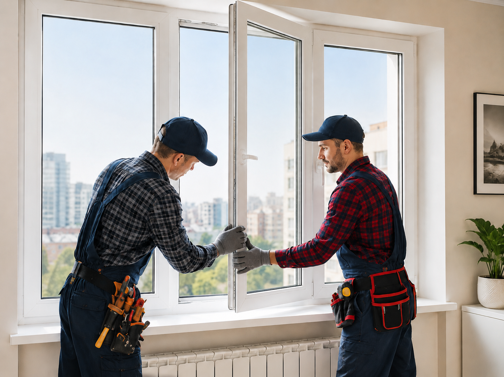

Diagnostic vitrage
On distingue casse visible, fissure, condensation interne et défaut d'étanchéité.
Double vitrage fissuré, embué ou cassé : fabrication sur mesure selon la fenêtre
Un double vitrage ne se remplace pas comme une vitre simple. Il faut relever la bonne épaisseur, contrôler la menuiserie et prévoir un vitrage compatible avec l'isolation de votre fenêtre.

On distingue casse visible, fissure, condensation interne et défaut d'étanchéité.
Largeur, hauteur, épaisseur, feuillure et parcloses sont contrôlées.
Le vitrage isolant est préparé selon les contraintes de la menuiserie.
Maintien, fermeture, joint et absence de contrainte sont testés.
Un double vitrage peut être cassé par impact, fissuré par choc thermique ou simplement perdre son étanchéité avec le temps. Lorsque de la buée apparaît entre les deux verres, le problème ne vient généralement pas du nettoyage : l'ensemble isolant est défaillant.
Le remplacement consiste à déposer l'ancien vitrage, vérifier la menuiserie, commander ou poser un vitrage compatible, puis contrôler la fermeture. La fenêtre doit conserver son isolation et son usage normal après intervention.
À Évreux, ce type de demande concerne souvent des fenêtres PVC récentes, des menuiseries aluminium, des portes-fenêtres, des chambres exposées au froid ou des baies vitrées donnant sur jardin ou balcon. Le devis ne peut pas être sérieux sans tenir compte du support.
Le vitrage isolant travaille avec la menuiserie. Une mauvaise épaisseur ou une pose sous contrainte peut créer une nouvelle casse.
Un double vitrage possède une épaisseur totale : verre, intercalaire, lame isolante, deuxième verre. Cette composition varie selon les fenêtres. Une erreur d'épaisseur peut empêcher la remise en place des parcloses ou créer un jeu anormal.
Le vitrier doit donc mesurer précisément et choisir un vitrage compatible. Dans certains cas, un vitrage phonique, feuilleté ou renforcé peut être conseillé selon l'exposition et l'usage.
Le remplacement ne s'arrête pas au verre. Les joints, parcloses, cales, feuillures et mécanismes de fermeture doivent être observés. Une fenêtre qui ferme mal peut exercer une pression sur le nouveau vitrage.
Après la pose, l'ouverture et la fermeture sont testées. Le vitrage doit rester stable, étanche et sans contrainte visible.
Sur une fenêtre PVC, les parcloses peuvent être clipsées et demandent une dépose attentive. Sur une menuiserie bois, l'état du support et des joints influence la pose. Sur l'aluminium, l'ajustement doit être propre pour éviter les vibrations et les infiltrations.
Cette différence explique pourquoi deux doubles vitrages de même taille ne coûtent pas toujours le même prix. L'accès, la hauteur, le poids, la difficulté de dépose et la composition du vitrage changent le temps de travail.
Le prix est construit après mesure et identification du vitrage.
Selon dimensions, épaisseur et disponibilité.
Selon performance thermique, acoustique ou sécurité.
Selon état des parcloses, accès et menuiserie.
Si le vitrage cassé expose le logement avant fabrication.
Pour une demande globale, consultez vitrier Évreux 27000. En cas de bris de glace dangereux, la page urgence vitrier Évreux explique la mise en sécurité. Pour un commerce, voyez vitrine magasin Évreux.
Évreux 27000, centre-ville, Saint-Michel, Navarre, La Madeleine, Nétreville, Cambolle et alentours selon disponibilité.
Un double vitrage doit être remplacé lorsqu'il est cassé, fissuré, embué entre les deux verres ou lorsqu'il ne joue plus correctement son rôle isolant.
Oui, le plus souvent. Les dimensions, l'épaisseur totale, la composition et le type de menuiserie doivent être relevés avant la commande.
Oui, si le vitrage est dangereux ou ouvert, une protection provisoire peut être proposée avant la pose définitive.
Le devis dépend des dimensions, de l'épaisseur, du type de verre, de l'accès, de la menuiserie et de la nécessité d'une dépose particulière.
Indiquez la menuiserie, la dimension approximative et le type de défaut visible.